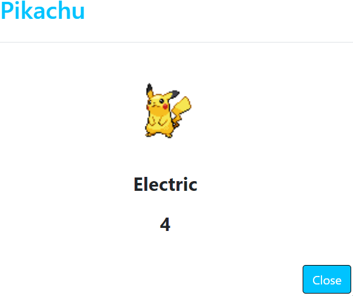
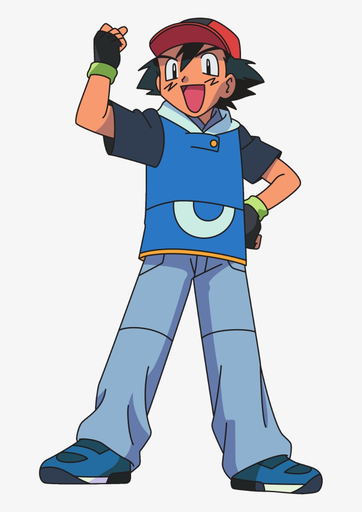

I've created a simple Pokédex Web App using HTML5, CSS, JavaScript, and Bootstrap. The app retrieves data from an API to show a list of items (Pokémons). When you click on a Pokémon, it opens a modal with details about the selected Pokémon.

As part of my web development course at CareerFoundry, I created the Pokédex web app as a personal project to showcase my JavaScript development skills.
This project aims to guide you in building a fully functioning JavaScript web application. For this project, I relied on an external data source. I focused not only on JavaScript but also on crafting high-quality HTML and CSS to ensure the app functions well as a whole.
The main view of the app shows a list of items (Pokémons) retrieved from an external public API called the Pokémon API. Users can click on any item in the list to view more details about that specific Pokémon. Additionally, there is a search bar available for users who want to look for a specific Pokémon. Finally, the main view also includes links to my social media profiles.

After the user clicks on their chosen Pokémon, the app will open the Pokémon view. This view will display a picture of the selected Pokémon, the Pokémon's type, and its weight. Additionally, there will be a close button that, when clicked, will return the user to the main view.
Learning something new is always challenging, and this was no exception. Practicing a new coding language like JavaScript presented a series of unique challenges, especially when adhering to ESLint rules for code formatting. Ensuring that the code was not only functional but also met rigorous standards of clean, readable, and maintainable code required significant effort. Additionally, integrating complex UI patterns and making them fully functional with clean layouts was a new and demanding task.
In conclusion, to overcome the challenges I faced, I focused on breaking down the learning process into manageable steps. I started by mastering the basics of JavaScript and then gradually moved on to more complex concepts like asynchronous programming and DOM manipulation. Using ESLint as a continuous feedback tool helped me refine my code and develop good coding habits over time. Regular practice with small projects and utilizing online resources such as tutorials and documentation were crucial in solidifying my understanding and building confidence. Seeking feedback from peers and mentors allowed me to identify areas for improvement and apply best practices effectively. Overall, this project was a great learning experience and a wonderful introduction to JavaScript.
